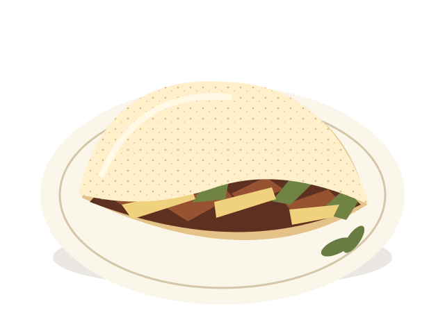

AUTOATENDIMENTO DEMONSTRATIVO
Bem-vindo à
Raízes do Nordeste
Seu próximo encontro com o sabor começa aqui.
Escolha seus favoritos e experimente um pedido com pagamento fictício, sem informar dados pessoais.
Um atendimento por vez. Ao encerrar ou recarregar, os dados temporários são limpos. Pedidos aprovados ficam registrados neste navegador.
DA NOSSA TERRA, PRA SUA MESA
Tempero de casa.
Sabor de Nordeste.
Tem coisa que abraça a gente por dentro. Uma tapioca quentinha, um recheio caprichado e aquele sabor que faz a gente se sentir em casa.
Feito com carinho. Servido com um sorriso.

nordestina
OS QUERIDINHOS DA CASA
É de dar água na boca.
Sabores da nossa terra que merecem
um lugar na sua próxima pausa.
Imagens ilustrativas. Produtos e valores fictícios para fins acadêmicos.
MUITO PRAZER, SOMOS RAÍZES
A nossa origem está
em cada receita.
A Raízes do Nordeste nasceu de uma ideia simples: levar o acolhimento e os sabores nordestinos para os pequenos momentos do dia.
Somos uma rede fictícia de lanchonetes inspirada na comida que reúne, na conversa sem pressa e na hospitalidade da nossa terra. Por aqui, toda pausa tem um gostinho de encontro.
Conheça nossos saboresSUA PAUSA ESTÁ QUASE PRONTA
Seu carrinho
Seu carrinho está esperando um sabor.
Escolha seus favoritos no cardápio para começar.
Voltar ao cardápioBEM-VINDO À NOSSA MESA
Entrar na demonstração
Projeto acadêmico: não crie contas reais. Esta identificação é uma simulação local, sem senha e sem autenticação segura. Qualquer pessoa com acesso a este navegador pode selecionar os perfis salvos.
Use o cliente fictício deste atendimento. Não informe dados pessoais. Perfis Web não estão disponíveis no Totem.
Experimente com um perfil fictício
Cliente Demonstração · cliente@exemplo.test
Cliente Totem · totem@exemplo.test
Quer experimentar o cadastro? Criar perfil demonstrativo
Voltar ao inícioUM PERFIL PARA EXPERIMENTAR
Cadastro demonstrativo
Use somente dados fictícios. O perfil vale apenas neste navegador. Não há senha, verificação de identidade ou conta real.
Já tem um perfil local? Entrar na demonstração
Voltar ao inícioSEUS DADOS NESTE NAVEGADOR
Perfil demonstrativo
Este perfil não é uma conta real. Edite apenas dados fictícios. As preferências abaixo não provocam envio de mensagens.
Você pode encerrar a identificação ou excluir este perfil, sua preferência de marketing e seus pedidos e resgates demonstrativos locais, incluindo os pontos calculados. O carrinho e a unidade serão mantidos.
REVISE SUA ESCOLHA
Finalizar pedido
Pagamento demonstrativo. Nenhuma cobrança será realizada.
Retirada na unidade
Voltar ao carrinho para editarUMA ESCOLHA COM SABOR DE CASA
Confirmação do pedido
Pagamento demonstrativo. Nenhuma cobrança será realizada.
SEUS ENCONTROS COM O NOSSO SABOR
Meus pedidos
DA NOSSA COZINHA PARA VOCÊ
Acompanhar pedido
Simulação acadêmica: não há comunicação com uma cozinha real, notificações ou alteração automática de status.
CADA SABOR CONTA
Minha fidelidade
Saldo de pontos
A cada R$ 1,00 de compra aprovada, você recebe 1 ponto. A parte fracionária é desprezada em cada pedido.
100 pontos = benefício demonstrativo de R$ 10,00.
O benefício é apenas registrado. Não é aplicado no checkout, não altera compras anteriores e não tem valor real.